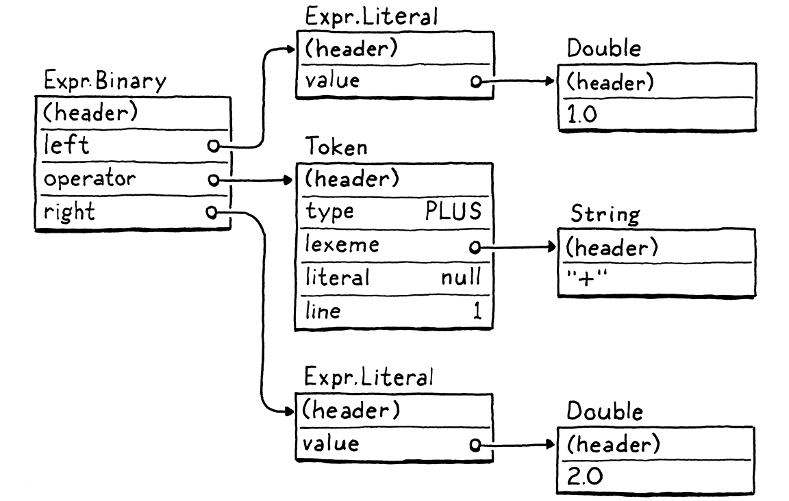
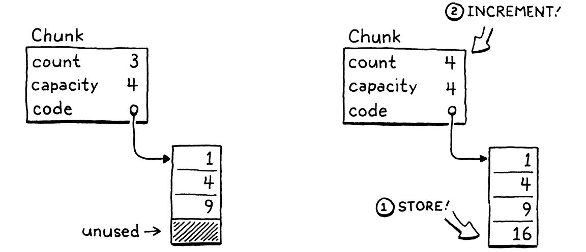
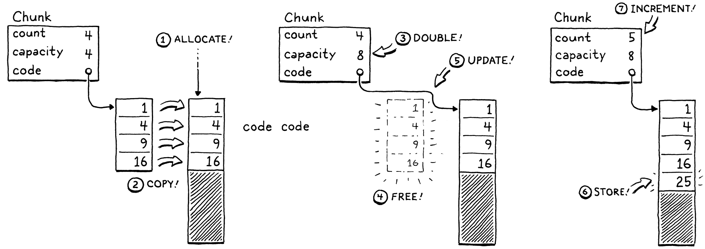
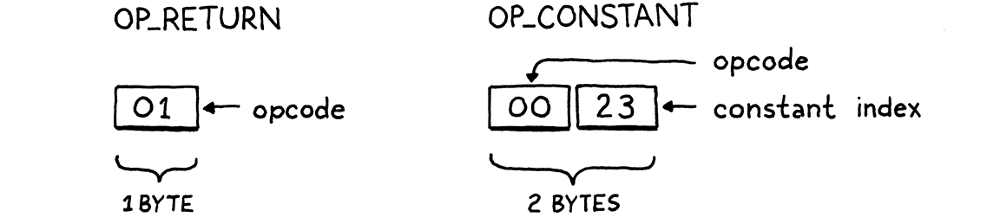

Chunks of Bytecode
This book is a work in progress!
×If you see a mistake, find something unclear, or have a suggestion, please let me know. To learn when new chapters are up, join the mailing list:
(I post about once a month. Don’t worry, I won’t spam you.)
If you find that you’re spending almost all your time on theory, start turning some attention to practical things; it will improve your theories. If you find that you’re spending almost all your time on practice, start turning some attention to theoretical things; it will improve your practice.
Donald Knuth
We already have ourselves a complete implementation of Lox with jlox, so why isn’t the book over yet? Part of this is because jlox relies on the JVM to do lots of things for us. If we want to understand how an interpreter works all the way down to the metal, we need to build those bits and pieces ourselves.
An even more fundamental reason that jlox isn’t sufficient is that it’s too damn slow. A tree-walk interpreter is fine for some kinds of high-level, declarative languages. But for a general-purpose, imperative language — even a “scripting” language like Lox, it won’t fly. Take this little script:
fun fib(n) { if (n < 2) return n; return fib(n - 1) + fib(n - 2); } var before = clock(); print fib(40); var after = clock(); print after - before;
On my laptop, that takes jlox about 72 seconds to execute. An equivalent C program finishes in half a second. Our dynamically-typed scripting language is never going to be as fast as a statically-typed language with manual memory management, but we don’t need to settle for more than two orders of magnitude slower.
We could take jlox and run it in a profiler and start tuning and tweaking hotspots, but that will only get us so far. The execution model — walking the AST — is fundamentally the wrong design. We can’t micro-optimize that to the performance we want any more than you can polish an AMC Gremlin into an SR-71 Blackbird.
We need to rethink the core model. This chapter introduces that model, bytecode, and begins our new interpreter, clox.
14 . 1 Bytecode?
In engineering, few choices are without trade-offs. To best understand why we’re going with bytecode, let’s stack it up against a couple of alternatives.
14 . 1 . 1 Why not walk the AST?
Our existing interpreter has a couple of things going for it:
-
Well, first, we already wrote it. It’s done. And the main reason it’s done is because this style of interpreter is really simple to implement. The runtime representation of the code directly maps to the syntax. It’s virtually effortless to get from the parser to the data structures we need at runtime.
-
It’s portable. Our current interpreter is written in Java and runs on any platform Java supports. If we re-wrote in C, we could compile and run it on basically every platform under the sun.
Those are real advantages. But, on the other hand, it’s not
memory-efficient. Each piece of syntax becomes an AST node. A tiny Lox
expression like 1 + 2 turns into a slew of objects with lots of pointers
between them, something like:

Each of those pointers adds an extra 32 or 64 bits of overhead to the object. Worse, sprinkling our data across the heap in a loosely-connected web of objects does bad things for spatial locality.
Modern CPUs process data way faster than they can pull it from RAM. To compensate for that, chips have multiple layers of caching. If a piece of memory it needs is already in the cache, it can be loaded more quickly. We’re talking upwards of 100 times faster.
How does data get into that cache? The machine speculatively stuffs things in there for you. Its heuristic is pretty simple. Whenever the CPU reads a bit of data from RAM, it pulls in a whole little bundle of adjacent bytes and stuffs them in the cache.
If our program next requests some data close enough to be inside that cache line, our CPU runs like a well-oiled conveyor belt in a factory. We really want to take advantage of this. To get that, the way we represent code in memory should be dense and ordered like it’s read.
Now look up at that tree. Those sub-objects could be anywhere. Every step the tree-walker takes where it follows a reference to a child node may to step outside the bounds of the cache and force the CPU to stall until a new lump of data can be slurped in from RAM. Just the overhead of those tree nodes with all of their pointer fields and object headers tends to push objects away from each other and out of the cache.
Our AST walker has other overhead too around interface dispatch and the visitor pattern, but the locality issues alone are enough to justify a better code representation.
14 . 1 . 2 Why not compile to native code?
If you want to go real fast, you want to get all of those layers of indirection out of the way. Right down to the metal. Machine code. It even sounds fast. “Machine code.”
Compiling directly to the native instruction set the chip supports is what the fastest languages do, and has been since the early days when engineers actually hand-wrote programs in machine code.
If you’ve never written any machine code, or its slightly more human-palatable cousin assembly code before, I’ll give you the gentlest of introductions. Native code is a dense series of operations, encoded directly in binary. Each instruction is between one and a few bytes long, and is almost mind-numbingly low level. “Move a value from this address to this register.” “Add the integers in these two registers.” Stuff like that.
The CPU cranks through the instructions, decoding and executing each one in order. There is no tree structure like our AST, and control flow is handled by jumping from one point in the code directly to another. No indirection, no overhead, no unnecessary skipping around or chasing pointers.
Lightning fast, but that performance comes at a cost. First of all, compiling to native code ain’t easy. Most chips in wide use today have sprawling Byzantine architectures with heaps of instructions that accreted over decades. They require sophisticated register allocation, pipelining, and instruction scheduling.
And, of course, you’ve thrown portability out. Spend a few years mastering some architecture and that still only gets you onto one of the several popular instruction sets out there. To get your language on all of them, you need to learn all of their instruction sets and write a separate back end for each one.
14 . 1 . 3 What is bytecode?
Fix those two points in your mind. On one end, a tree-walk interpreter is simple, portable, and slow. On the other, native code is complex and platform-specific but fast. Bytecode sits in the middle. It retains the portability of a tree-walker — we won’t be getting our hands dirty with assembly code in this book. It trades in some simplicity to get a performance boost in return, though not as fast as going fully native.
Structurally, bytecode resembles machine code. It’s a dense, linear sequence of binary instructions. That keeps overhead low and plays nice with the cache. However, it’s a much simpler, higher-level instruction set than any real chip out there. (In many bytecode formats, each instruction is only a single byte long, hence “bytecode”.)
Imagine you’re writing a native compiler from some source language and you’re given carte blanche to define the easiest possible architecture to target. Bytecode is kind of like that. It’s an idealized fantasy instruction set that makes your life as the compiler writer easier.
The problem with a fantasy architecture, of course, is that it doesn’t exist. We solve that by writing an emulator — a simulated chip written in software that interprets the bytecode one instruction at a time. A “virtual machine” (VM) if you will.
That emulation layer adds overhead, which is a key reason bytecode is slower than native code. But in return, it gives us portability. Write our VM in a language like C that is already supported on all the machines we care about and we can run our emulator on top of any hardware we like.
This is the path we’ll take with our new interpreter, clox. The same path taken by the main implementations of Python, Ruby, Lua, OCaml, Erlang, and others. In many ways, it parallels the structure of our previous interpreter:

Of course, we won’t implement the phases strictly in order. Like our previous interpreter, we’ll bounce around, building up the implementation one language feature at a time. In this chapter, we’ll get the skeleton of the application in place and the data structures needed to store and represent a chunk of bytecode.
14 . 2 Getting Started
Where else to begin, but at main()? Fire up your
trusty text editor and C compiler and start typing:
create new file
#include "common.h" int main(int argc, const char* argv[]) { return 0; }
From this tiny seed, we will grow our entire VM. Since C provides us with so little, we first need to spend some time amending the soil. Some of that goes into this header:
create new file
#ifndef clox_common_h #define clox_common_h #include <stdbool.h> #include <stdint.h> #endif
There are a handful of types and constants we’ll use throughout the interpreter,
and this is a convenient place to put them. For now, it’s just the nice C99
Boolean and explicit-sized integer types — bool, uint8_t, and friends.
14 . 3 Chunks of Instructions
Next, we need a module to define our code representation. I’ve been using “chunk” to refer to blobs of bytecode, so let’s make that the official name for that module:
create new file
#ifndef clox_chunk_h #define clox_chunk_h #include "common.h" #endif
In our bytecode format, each instruction has a one-byte operation code (universally shorted to “opcode”). That number controls what kind of instruction we’re dealing with — add, subtract, look up variable, etc. We define those here:
#include "common.h"
typedef enum { OP_RETURN, } OpCode;
#endif
For now, we start with a single instruction, OP_RETURN. When we have a VM,
this one will mean “return from the current function”. I admit this isn’t
exactly useful yet, but we have to start somewhere, and this is a particularly
simple instruction, for reasons we’ll get to later.
14 . 3 . 1 A dynamic array of instructions
Bytecode is a series of instructions. Eventually, we’ll store some other data along with the instructions, so let’s go ahead and create a struct to hold it all:
} OpCode;
typedef struct { uint8_t* code; } Chunk;
#endif
At the moment, this is simply a wrapper around an array of bytes. Since we don’t know how big the array needs to be before we start compiling a chunk, it must be dynamic. Dynamic arrays are one of my favorite data structures. That sounds like claiming vanilla is my favorite ice cream flavor, but hear me out. Dynamic arrays provide:
- Cache-friendly, dense storage.
- Constant-time indexed element lookup.
- Constant-time appending to the end of the array.
Those features are exactly why we used it all the time in jlox under the guise of Java’s ArrayList class. Now that we’re in C, we get to roll our own. If you’re rusty on dynamic arrays, the idea is pretty simple. In addition to the array itself, we keep two numbers — the number of elements in the array we have allocated (“capacity”) and how many of those allocated entries are actually in use (“count”).
typedef struct {
int count; int capacity;
uint8_t* code;
When we add an element, if the count is less than the capacity, then there is already available space in the array. We store the new element right in there and bump the count:

If we have no spare capacity, then the process is a little more involved:

- Allocate a new array with more capacity.
- Copy the existing elements from the old array to the new one.
- Store the new
capacity. - Delete the old array.
- Update
codeto point to the new array. - Store the element in the new array now that there is room.
- Update the
count.
We have our struct ready, so let’s implement the functions to work with it. C doesn’t have constructors, so we declare a function to initialize a new chunk:
} Chunk;
void initChunk(Chunk* chunk);
#endif
And implement it thusly:
create new file
#include <stdlib.h> #include "chunk.h" void initChunk(Chunk* chunk) { chunk->count = 0; chunk->capacity = 0; chunk->code = NULL; }
It starts off completely empty. We don’t even allocate an array yet. To append a byte to the end of the chunk we use:
void initChunk(Chunk* chunk);
add after initChunk()
void writeChunk(Chunk* chunk, uint8_t byte);
#endif
This is where the interesting work happens:
add after initChunk()
void writeChunk(Chunk* chunk, uint8_t byte) { if (chunk->capacity < chunk->count + 1) { int oldCapacity = chunk->capacity; chunk->capacity = GROW_CAPACITY(oldCapacity); chunk->code = GROW_ARRAY(chunk->code, uint8_t, oldCapacity, chunk->capacity); } chunk->code[chunk->count] = byte; chunk->count++; }
The first thing we need to do is see if the current array already has capacity
for the new byte. If it doesn’t, then we first need to grow the array to make
room. (We also hit this case on the very first write when the array is NULL
and capacity is 0.)
To grow the array, first we figure out the new capacity and grow the array to that size. Both of those lower-level memory operations are defined in a new module:
#include "chunk.h"
#include "memory.h"
void initChunk(Chunk* chunk) {
It starts with:
create new file
#ifndef clox_memory_h #define clox_memory_h #define GROW_CAPACITY(capacity) \ ((capacity) < 8 ? 8 : (capacity) * 2) #endif
This macro calculates a new capacity based on a given current capacity. In order to get the performance we want, the important part is that it scales based on the old size. We grow by a factor of two, which is pretty typical. 1.5× is another common choice.
We also have an edge case to handle the first “grow” when the current capacity is zero. In that case, we jump straight to eight elements instead of starting at one. That avoids a little extra memory churn when the array is very small, at the expense of wasting a few bytes on very small chunks.
Once we know the desired capacity, we create or grow the array to that size
using GROW_ARRAY():
#define GROW_CAPACITY(capacity) \ ((capacity) < 8 ? 8 : (capacity) * 2)
in GROW_CAPACITY()
#define GROW_ARRAY(previous, type, oldCount, count) \ (type*)reallocate(previous, sizeof(type) * (oldCount), \ sizeof(type) * (count)) void* reallocate(void* previous, size_t oldSize, size_t newSize);
#endif
This macro wraps a little syntactic sugar around a function call to
reallocate(), where the real work happens. The macro itself takes care of
getting the size of the array’s element type and casting the resulting void*
back to a pointer of the right type.
The magic lives here:
create new file
#include <stdlib.h> #include "common.h" #include "memory.h" void* reallocate(void* previous, size_t oldSize, size_t newSize) { return realloc(previous, newSize); }
OK, “magic” might be overselling it. This function is again the thinnest of
wrappers, this time around the C standard library’s realloc() function. That
function, if you’re rusty on your C stdlib, is sort of a hybrid of malloc(),
free(), and a dash of special sauce. You give it a pointer to some existing
memory (previous) and a desired size (newSize). If the pointer is NULL, it
allocates and returns a brand new chunk of memory with the desired size, just
like malloc(). If the desired size is zero, and the pointer is not NULL, it
deallocates the pointer, like free() and returns NULL.
The interesting case is when the pointer is not NULL and the size is not
zero. In that case, it will try to resize the allocated block. If the new size
is smaller than the existing block of memory, it simply shrinks the allocated size of the block and returns the
same pointer you gave it. If the new size is larger, it attempts to grow the
existing block of memory.
It can only do that if the memory after that block isn’t already in use. If it’s
unavailable, realloc() instead allocates a new block of memory of the
desired size, copies over the old bytes, frees the old block, and then returns a
pointer to the new block. Remember, that’s exactly the behavior we want for our
dynamic array.
If you like tables, here’s the various cases:
| Existing size | Desired size | Result |
0 (NULL pointer) |
0 |
Does nothing. |
0 (NULL pointer) |
1000 |
Equivalent to malloc(1000). |
1000 |
0 |
Equivalent to free(). |
2000 |
1000 |
Shrink allocated block. |
1000 |
2000 |
Grow existing block or allocate new one and copy. |
OK, we can create new chunks and write instructions to them. Are we done? Nope! We’re in C now, remember, we have to manage memory ourselves, like Ye Olden Times, and that means freeing it too:
void initChunk(Chunk* chunk);
add after initChunk()
void freeChunk(Chunk* chunk);
void writeChunk(Chunk* chunk, uint8_t byte);
The implementation is:
add after initChunk()
void freeChunk(Chunk* chunk) { FREE_ARRAY(uint8_t, chunk->code, chunk->capacity); initChunk(chunk); }
It deallocates all of the memory and then calls initChunk() to zero out the
fields leaving the chunk in a well-defined empty state. To free the memory, we
add one more macro:
sizeof(type) * (count))
in GROW_ARRAY()
#define FREE_ARRAY(type, pointer, oldCount) \ reallocate(pointer, sizeof(type) * (oldCount), 0)
void* reallocate(void* previous, size_t oldSize, size_t newSize);
Like GROW_ARRAY(), this is a wrapper around a call to reallocate(). This one
simply “resizes” the memory down to zero bytes.
14 . 4 Disassembling Chunks
Great, now we have a little module for creating chunks of bytecode. Let’s try it out by hand-building a sample chunk:
int main(int argc, const char* argv[]) {
in main()
Chunk chunk; initChunk(&chunk); writeChunk(&chunk, OP_RETURN); freeChunk(&chunk);
return 0;
Don’t forget the include:
#include "common.h"
#include "chunk.h"
int main(int argc, const char* argv[]) {
Run that and give it a try. Did it work? Uh… who knows? All we’ve done is push some bytes around in memory. We have no human-friendly way to see what’s actually inside that chunk we made.
To fix this, we’re going to create a disassembler. An assembler is an old-school program that takes a file containing human-readable mnemonic names for CPU instructions like “ADD” and “MULT” and translates them to their binary machine code equivalent. A dis-assembler goes in the other direction — given a blob of machine code, it spits out a textual listing of the instructions.
We’ll implement something similar. Given a chunk, it will print out all of the instructions in it. A Lox user won’t use this, but we Lox maintainers will certainly benefit since it gives us a window into the interpreter’s internal representation of code.
In main(), after we create the chunk, we pass it to the disassembler:
initChunk(&chunk); writeChunk(&chunk, OP_RETURN);
in main()
disassembleChunk(&chunk, "test chunk");
freeChunk(&chunk);
Again, we whip up a yet another module:
#include "chunk.h"
#include "debug.h"
int main(int argc, const char* argv[]) {
Here’s that header:
create new file
#ifndef clox_debug_h #define clox_debug_h #include "chunk.h" void disassembleChunk(Chunk* chunk, const char* name); int disassembleInstruction(Chunk* chunk, int i); #endif
In main(), we call disassembleChunk() to disassemble all of the instructions
in the entire chunk. That’s implemented in terms of the other function, which
just disassembles a single instruction. It shows up here in the header because
we’ll call it from the VM in later chapters.
Here’s a start at the implementation file:
create new file
#include <stdio.h> #include "debug.h" void disassembleChunk(Chunk* chunk, const char* name) { printf("== %s ==\n", name); for (int i = 0; i < chunk->count;) { i = disassembleInstruction(chunk, i); } }
To disassemble a chunk, we print a little header (so we can tell which chunk
we’re looking at) and then crank through the bytecode, disassembling each
instruction. The way we iterate through the code is a little odd. Instead of
incrementing i in the loop, we let disassembleInstruction() do it for us.
When we call that function, after disassembling the instruction at the given
offset, it returns the offset of the next instruction. This is because, as
we’ll see later, instructions can have different sizes.
The core of the debug module is this function:
add after disassembleChunk()
int disassembleInstruction(Chunk* chunk, int offset) { printf("%04d ", offset); uint8_t instruction = chunk->code[offset]; switch (instruction) { case OP_RETURN: return simpleInstruction("OP_RETURN", offset); default: printf("Unknown opcode %d\n", instruction); return offset + 1; } }
First, it prints the byte offset of the given instruction — it tells us where in the chunk this instruction is. This will be a helpful signpost when we start doing control flow and jumping around in the bytecode.
Next, it reads a single byte from the bytecode at the given offset. That’s our
opcode. We switch on that. For each kind of
instruction, we dispatch to a little utlity function for displaying it. On the
off chance that the given byte doesn’t look like an instruction at all — a bug
in our compiler — we print that too. For the one instruction we do have,
OP_RETURN, the display function is:
add after disassembleChunk()
static int simpleInstruction(const char* name, int offset) { printf("%s\n", name); return offset + 1; }
There isn’t much to a return instruction, so all it does is print the name of the opcode, then return the next byte offset past this instruction. Other instructions will have more going on.
If we run our nascent interpreter now, it actually prints something:
== test chunk == 0000 OP_RETURN
It worked! This is sort of the “Hello, world!” of our code representation. We can create a chunk, write an instruction to it, and then extract that instruction back out. Our encoding and decoding of the binary bytecode is working.
14 . 5 Constants
Now that we have a rudimentary chunk structure working, let’s start making it more useful. We can store code in chunks, but what about data? Many values the interpreter works with are created at runtime as the result of operations. In:
1 + 2;
The value 3 appears nowhere in the code. However, the literals 1 and 2 do.
To compile that statement to bytecode, we need some sort of instruction that
means “produce a constant” and those literal values need to get stored in the
chunk somewhere. In jlox, the Expr.Literal AST node held the value. We need a
different solution now that we don’t have a syntax tree.
14 . 5 . 1 Representing values
We won’t be running any code in this chapter, but since constants have a foot in both the static and dynamic worlds of our interpreter, they force us to start thinking at least a little bit about how our VM should represent values.
For now, we’re going to start as simple as possible — we’ll only support double-precision floating point numbers. This will obviously expand over time, so we’ll set up a new module to give ourselves room to grow:
create new file
#ifndef clox_value_h #define clox_value_h #include "common.h" typedef double Value; #endif
This typedef abstracts how values are concretely represented in C. That way, we can change that representation without needing to go back and fix existing code that passes around values.
Back to the question of where to store constants in a chunk. For small fixed-size values like integers, many instruction sets store the value directly in the code stream right after the opcode. These are called immediate instructions because the bits for the value are immediately after the opcode.
That doesn’t work well for large or variable-sized constants like strings. In a native compiler to machine code, those bigger constants get stored in a separate “constant data” region in the binary executable. Then, the instruction to load a constant has an address or offset pointing to where the value is stored in that section.
Most virtual machines do something similar. For example, the Java Virtual Machine associates a constant pool with each compiled class. That sounds good enough for clox to me. Each chunk will carry with it a list of the values that appear as literals in the program. To keep things simpler, we’ll put all constants in there, even simple integers.
14 . 5 . 2 Value arrays
The constant pool is an array of values. The instruction to load a constant looks up the value by index in that array. As with our bytecode array, the compiler doesn’t know how big the array needs to be ahead of time. So, again, we need a dynamic one. Since C doesn’t have generic data structures, we’ll write another dynamic array data structure, this time for Value:
typedef double Value;
typedef struct { int capacity; int count; Value* values; } ValueArray;
#endif
As with the bytecode array in Chunk, this struct wraps a pointer to an array along with its allocated capacity and the number of elements in use. We also need the same three functions to work with value arrays:
} ValueArray;
in OBJ_VAL()
void initValueArray(ValueArray* array); void writeValueArray(ValueArray* array, Value value); void freeValueArray(ValueArray* array);
#endif
The implementations will probably give you déjà vu. First, to create a new one:
create new file
#include <stdio.h> #include "memory.h" #include "value.h" void initValueArray(ValueArray* array) { array->values = NULL; array->capacity = 0; array->count = 0; }
Once we have an initialized array, we can start adding values to it:
add after initValueArray()
void writeValueArray(ValueArray* array, Value value) { if (array->capacity < array->count + 1) { int oldCapacity = array->capacity; array->capacity = GROW_CAPACITY(oldCapacity); array->values = GROW_ARRAY(array->values, Value, oldCapacity, array->capacity); } array->values[array->count] = value; array->count++; }
The memory-management macros we wrote earlier do let us reuse some of the logic from the code array, so this isn’t too bad. Finally, to release all memory used by the array:
add after writeValueArray()
void freeValueArray(ValueArray* array) { FREE_ARRAY(Value, array->values, array->capacity); initValueArray(array); }
Now that we have growable arrays of values, we can add one to Chunk to store its constants:
typedef struct { int count; int capacity; uint8_t* code;
ValueArray constants;
} Chunk;
Don’t forget the include:
#include "common.h"
#include "value.h"
typedef enum {
And another include over in the “chunk.c” implementation file:
#include "memory.h"
#include "value.h"
void initChunk(Chunk* chunk) {
Ah, C, and it’s Stone Age modularity story. Where were we? Right. When we initialize a new chunk, we initialize its constant list too:
chunk->code = NULL;
in initChunk()
initValueArray(&chunk->constants);
}
Likewise, we free the constants when we free the chunk:
FREE_ARRAY(uint8_t, chunk->code, chunk->capacity);
in freeChunk()
freeValueArray(&chunk->constants);
initChunk(chunk);
Next, we define a convenience method to add a new constant to the chunk. Our yet-to-be-written compiler could write to the constant array inside Chunk directly — it’s not like C has private fields or anything — but it’s a little nicer to add an explicit function:
void writeChunk(Chunk* chunk, uint8_t byte);
add after writeChunk()
int addConstant(Chunk* chunk, Value value);
#endif
Then we implement it:
add after writeChunk()
int addConstant(Chunk* chunk, Value value) { writeValueArray(&chunk->constants, value); return chunk->constants.count - 1; }
After it adds the constant, it returns the index where it was appended so that we can locate that same constant later.
14 . 5 . 3 Constant instructions
We can store constants in chunks, but we also need to execute them. In a piece of code like:
print 1; print 2;
The compiled chunk needs to not only contain the values 1 and 2, but know when to produce them so that they are printed in the right order. Thus, we need an instruction that produces a particular constant:
typedef enum {
OP_CONSTANT,
OP_RETURN,
When the VM executes a constant instruction, it “loads”
the constant for use. This new instruction is a little more complex than
OP_RETURN. In the above example, we load two different constants. A single
bare opcode isn’t enough to know which constant to load.
To handle cases like this, our bytecode — like most others — allows instructions to have operands. These are stored as binary data immediately after the opcode in the instruction stream and let us parameterize what the instruction does.
Each opcode determines how many operand bytes it has and what they mean. For example, a simple operation like “return” may have no operands, where an instruction for “load local variable” needs an operand to identify which variable to load. Each time we add a new instruction to clox, we specify what its operands look like — its instruction format.
In this case, OP_CONSTANT takes a single byte operand that specifies which
constant to load from the chunk’s constant array.

Since we don’t have a compiler yet, we “hand-compile” one in our test chunk:
initChunk(&chunk);
in main()
int constant = addConstant(&chunk, 1.2); writeChunk(&chunk, OP_CONSTANT); writeChunk(&chunk, constant);
writeChunk(&chunk, OP_RETURN);
We add the constant value itself to the chunk’s constant pool. That returns the
index of the constant in the array. Then we write the constant instruction,
starting with its opcode. After that, we write the one-byte constant index
operand. Note that writeChunk() can write opcodes or operands. It’s all raw
bytes as far as that function is concerned.
If we try to run this now, the disassembler is going to yell at us because it doesn’t know how to decode the new instruction. Let’s fix that:
switch (instruction) {
in disassembleInstruction()
case OP_CONSTANT: return constantInstruction("OP_CONSTANT", chunk, offset);
case OP_RETURN:
This instruction has a different instruction format, so we write a new helper function to disassemble it:
}
add after disassembleChunk()
static int constantInstruction(const char* name, Chunk* chunk, int offset) { uint8_t constant = chunk->code[offset + 1]; printf("%-16s %4d '", name, constant); printValue(chunk->constants.values[constant]); printf("'\n"); }
static int simpleInstruction(const char* name, int offset) {
There’s more going on here. As with OP_RETURN, we print out the name of the
opcode. Then we pull out the constant index from the subsequent byte in the
chunk. We print that index, but that isn’t super useful to we human readers. So
we also look up the actual constant value — since constants are known at
compile-time after all — and display the value itself too.
This requires some way to print a Lox Value. That function will live in the value module, so we include that:
#include "debug.h"
#include "value.h"
void disassembleChunk(Chunk* chunk, const char* name) {
Over in that header, we declare:
void freeValueArray(ValueArray* array);
add after freeValueArray()
void printValue(Value value);
#endif
And here’s an implementation:
add after freeValueArray()
void printValue(Value value) { printf("%g", value); }
Magnificent, right? As you can imagine, this is going to get more complex once we add dynamic typing to Lox and have values of different types.
Back in constantInstruction(), the only remaining piece is the return value:
printf("'\n");
in constantInstruction()
return offset + 2;
}
Remember that disassembleInstruction() also returns a number to tell the
caller how many bytes to advance to reach the beginning of the next
instruction. Where OP_RETURN was only a single byte, OP_CONSTANT is two — one for the opcode and one for the operand.
14 . 6 Line Information
Chunks contain almost everything we need to preserve from the user’s source code. It’s kind of crazy to think that we can reduce all of the different AST classes that we created in jlox down to an array of bytes and an array of constants. There’s only one piece of data we’re missing. We need it, even though the user hopes to never see it.
When a runtime error occurs, we show the user the line number of the offending source code. In jlox, those numbers live in tokens, which we in turn store in the AST nodes. We need a different solution for clox now that we’ve ditched syntax trees in favor of bytecode. Given any bytecode instruction, we need to be able to determine the line of the user’s source program that it was compiled from.
There are a lot of clever ways we could encode this. I took the absolute simplest approach I could come up with, even though it’s embarrassingly inefficient with memory. In the chunk, we store a separate array of integers that parallels the bytecode. Each number in the array is the line number for the corresponding byte in the bytecode. When a runtime error occurs, we look up the line number at the same index as the current instruction’s offset in the code array.
To implement this, we add another array to Chunk:
uint8_t* code;
int* lines;
ValueArray constants;
Since it exactly parallels the bytecode array, we don’t need a separate count or capacity. Every time we touch the code array, we make a corresponding change to the line number array, starting with initialization:
chunk->code = NULL;
in initChunk()
chunk->lines = NULL;
initValueArray(&chunk->constants);
And likewise deallocation:
FREE_ARRAY(uint8_t, chunk->code, chunk->capacity);
in freeChunk()
FREE_ARRAY(int, chunk->lines, chunk->capacity);
freeValueArray(&chunk->constants);
When we write a byte of code to the chunk, we need to know what source line it
came from, so we add an extra parameter in the declaration of writeChunk():
void freeChunk(Chunk* chunk);
function writeChunk()
replace 1 line
void writeChunk(Chunk* chunk, uint8_t byte, int line);
int addConstant(Chunk* chunk, Value value);
And in the implementation:
function writeChunk()
replace 1 line
void writeChunk(Chunk* chunk, uint8_t byte, int line) {
if (chunk->capacity < chunk->count + 1) {
When we allocate or grow the code array, we do the same for the line info too:
chunk->code = GROW_ARRAY(chunk->code, uint8_t, oldCapacity, chunk->capacity);
in writeChunk()
chunk->lines = GROW_ARRAY(chunk->lines, int, oldCapacity, chunk->capacity);
}
Finally, we store the line number in the array:
chunk->code[chunk->count] = byte;
in writeChunk()
chunk->lines[chunk->count] = line;
chunk->count++;
14 . 6 . 1 Disassembling line information
Alright, let’s try this out with our little, uh, artisanal chunk. First, since
we added a new parameter to writeChunk(), we need to fix those calls to pass
in some — arbitrary at this point — line number:
int constant = addConstant(&chunk, 1.2);
in main()
replace 4 lines
writeChunk(&chunk, OP_CONSTANT, 123); writeChunk(&chunk, constant, 123); writeChunk(&chunk, OP_RETURN, 123);
disassembleChunk(&chunk, "test chunk");
Once we have a compiler, of course, it will track the current line as it parses and pass that in.
Now that we have line information for every instruction, let’s put it to good use. In our disassembler, it’s helpful to show which source line each instruction was compiled from. That gives us a way to map back to the original code when we’re trying to figure out what some blob of bytecode is supposed to do. After printing the offset of the instruction — the number of bytes from the beginning of the chunk — we show its source line:
int disassembleInstruction(Chunk* chunk, int offset) { printf("%04d ", offset);
in disassembleInstruction()
if (offset > 0 && chunk->lines[offset] == chunk->lines[offset - 1]) { printf(" | "); } else { printf("%4d ", chunk->lines[offset]); }
uint8_t instruction = chunk->code[offset];
Bytecode instructions tend to be pretty fine-grained. A single line of source
code often compiles to a whole sequence of instructions. To make that more
visually clear, we show a | for any instruction that comes from the same
source line as the preceding one. The resulting output for our hand-written
chunk looks like:
== test chunk == 0000 123 OP_CONSTANT 0 '1.2' 0002 | OP_RETURN
We have a three-byte chunk. The first two bytes are a constant instruction that
loads 1.2 from the chunk’s constant pool. The first byte is the OP_CONSTANT
opcode and the second is the index in the constant pool. The third byte (at
offset 2) is a single-byte return instruction.
In the remaining chapters, we will flesh this out with lots more kinds of instructions. But the basic structure is here, and we have everything we need now to completely represent an executable piece of code at runtime in our virtual machine. Remember that whole family of AST classes we defined in jlox? In clox, we’ve reduced that down to three arrays: bytes of code, constant values, and line information for debugging.
This reduction is a key reason why our new interpreter will be faster than jlox. You can think of bytecode as a sort of compact serialization of the AST, highly optimized for how the interpreter will deserialize it, in the order it needs. In the next chapter, we will see how the virtual machine does exactly that.
Challenges
-
Our encoding of line information is hilariously wasteful of memory. Given that a series of instructions often correspond to the same source line, a natural solution is something akin to run-length encoding of the line numbers.
Devise an encoding that compresses the line information for a series of instructions on the same line. Change
writeChunk()to write this compressed form, and implement agetLine()function that, given the index of an instruction, determines the line where the instruction occurs.Hint: It’s not necessary for
getLine()to be particularly efficient. Since it is only called when a runtime error occurs, it is well off the critical path where performance matters. -
Because
OP_CONSTANTonly uses a single byte for its operand, a chunk may only contain up to 256 different constants. That’s small enough that people writing real-world code will hit that limit. We could use two or more bytes to store the operand, but that makes every constant instruction take up more space. Most chunks won’t need that many unique constants, so that wastes space and sacrifices some locality in the common case to support the rare case.To balance those two competing aims, many instruction sets feature multiple instructions that perform the same operation but with operands of different sizes. Leave our existing one-byte
OP_CONSTANTinstruction alone, and define a secondOP_CONSTANT_LONGinstruction. It stores the operand as a 24-bit number, which should be plenty.Implement this function:
void writeConstant(Chunk* chunk, Value value, int line) { // Implement me... }
It adds
valuetochunk’s constant array and then writes an appropriate instruction to load the constant. Also add support to the disassembler forOP_CONSTANT_LONGinstructions.Defining two instructions seems to be the best of both worlds. What sacrifices, if any, does it force on us?
-
Our
reallocate()function relies on the C standard library for dynamic memory allocation and freeing.malloc()andfree()aren’t magic. Find a couple of open source implementations of them and explain how they work. How do they keep track of which bytes are allocated and which are free? What is required to allocate a block of memory? Free it? How do they make that efficient? What do they do about fragmentation?Hardcore mode: Implement
reallocate()without callingrealloc(),malloc(), orfree(). You are allowed to callmalloc()once, at the beginning of the interpreter’s execution, to allocate a single big block of memory which yourreallocate()function has access to. It parcels out blobs of memory from that single region, your own personal heap. It’s your job to define how it does that.
Design Note: Test Your Language
We’re almost halfway through the book and one thing we haven’t talked about is testing your language implementation. That’s not because testing isn’t important. I can’t possibly stress enough how vital it is to have a good, comprehensive test suite for your language.
I wrote a test suite for Lox (which you are welcome to use on your own Lox implementation) before I wrote a single word of this book. Those tests found countless bugs in my implementations.
Tests are important in all software, but they’re even more important for a programming language for at least a couple of reasons:
-
Users expect their programming languages to be rock solid. We are so used to mature, stable compilers and interpreters that “It’s your code, not the compiler” is an ingrained part of software culture. If there are bugs in your language, users will go through the full five stages of grief before they can figure out what’s going on, and you don’t want to put them through all that.
-
A language implementation is a deeply interconnected piece of software. Some codebases are broad and shallow. If the file loading code is broken in your text editor, it — hopefully! — won’t cause failures in the text rendering on screen. Language implementations are narrower and deeper, especially the core of the interpreter that handles the language’s actual semantics. That makes it easy to for subtle bugs to creep in caused by weird interactions between various parts of the system. It takes good tests to flush those out.
-
The input to a language implementation is, by design, combinatorial. There are an infinite number of possible programs a user could write, and your implementation needs to run them all correctly. You obviously can’t test that exhaustively, but you need to work hard to cover as much of the input space as you can.
-
Language implementations are often complex, constantly changing, and full of optimizations. That leads to gnarly code with lots of dark corners where bugs can hide.
All of that means you’re gonna want a lot of tests. But what tests? Projects I’ve seen focus mostly on end-to-end “language tests”. Each test is a program written in the language along with the output or errors it is expected to produce. Then you have a test runner that pushes the test program through your language implementation and validates that it does what it’s supposed to. Writing your tests in the language itself has a few nice advantages:
-
The tests aren’t coupled to any particular API or internal architecture decisions of the implementation. This frees you to reorganize or rewrite parts of your interpreter or compiler without needing to update a slew of tests.
-
You can use the same tests for multiple implementations of the language.
-
Tests can often be terse and easy to read and maintain since they are simply scripts in your language.
It’s not all rosy, though:
-
End-to-end tests help you determine if there is a bug, but not where the bug is. It can be harder to figure out where the erroneous code in the implementation is because all the test tells you is that the right output didn’t appear.
-
It can be a chore to craft a valid program that tickles some obscure corner of the implementation. This is particularly true for highly-optimized compilers where you may need to write convoluted code to ensure that you end up on just the right optimization path where a bug may be hiding.
-
The overhead can be high to fire up the interpreter, parse, compile, and run each test script. With a big suite of tests — which you do want, remember — that can mean a lot of time spent waiting for the tests to finish running.
I could go on, but I don’t want this to turn into a sermon. Also, I don’t pretend to be an expert on how to test languages. I just want you to internalize how important it is that you test yours. Seriously. Test your language. You’ll thank me for it.